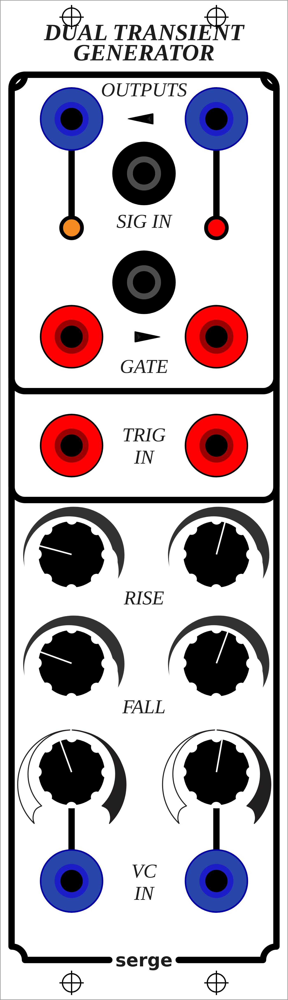

Dual Transient Generator
DTG · Dual Rise/Fall
Two slope generators with voltage-controlled rise and fall: envelopes, slew, LFOs and pulse delays in 2".
- Design
- Serge Tcherepnin
- Function
- Envelopes / slope
- Panel widths
- 2"
- Build options
- 1
Panels in this repo


How it works
The DTG is the Dual Universal Slope Generator's circuit with fewer front-panel options. Each channel slews whatever arrives at its signal input, or fires a full rise-and-fall when triggered.
Rise and fall each have a knob, and a VC input sets both. A gate holds the channel at the top until it ends; the end-of-cycle output can retrigger the channel for LFO duty or trigger the other channel.
Controls and jacks
| Name | Type | What it does |
|---|---|---|
| SIG IN | inputs | Signal to slew. |
| TRIG IN | inputs | Start an envelope. |
| RISE, FALL | knobs | Slope times. |
| VC IN | inputs | Voltage control of the slopes. |
| OUTPUTS | outputs | Slope outputs. |
| GATE / end | outputs | End-of-cycle pulses. |
The full two-channel slope generator, with Ken Stone's CGS114 board, is on the Dual Universal Slope Generator page; one channel of it is the CGS75 VC Slope.
Build options
Low-Gain LGE114A Dual Rise/Fall (DTG)
- Offered as
- Assembled module or DIY PCBs
- Format
- 4U Serge, Loudest Warning-style mounting
- Schematic
- availableLow-Gain schematics (Google Drive, linked below)
- BOM
- availableLow-Gain BOMs (Google Drive, linked below)
- Mouser cart
- Low-Gain Mouser cart: LGE114B Main & I/O Board
The maker's own shared Mouser project: open it and choose "Buy selected items". Check what it leaves out (often pots, knobs, jacks and headers). - Documents
- LGE114B BOM
LGE114B Main PCB schematic
LGE114 V2 Main Board BOM
LGE114 Main Board schematic
LGE114AC I/O Board BOM
LGE114AC I/O Board (wiring diagram) schematic
Code confirmed on low-gain.com: the product page (lge114a) is the Dual Rise/Fall (DTG). LGE114A is its panel and I/O option; it runs on the LGE114 main board (V1 or V2) or the newer LGE114B block-format board, which ships with matched SMD transistors fitted.
Low-Gain's DIY panel stacks the two slopes one above the other, while the assembled module uses the DTG's side-by-side layout, and the board has a loop switch. Check which layout and which switches your panel from this repo has before picking the I/O board.
The LED drivers are not on the main board. Low-Gain advises against hanging an LED and resistor straight off an output; use their LED driver chiclets or the I/O board.
Low-Gain boards set their own jack positions; check them against the panel you use.
Ken Stone's Serge-derived designs may be built for personal use only; Serge Tcherepnin keeps all rights to his circuits. Schematics, parts lists and PCBs belong to their designers and sellers, so these pages link to them rather than copying them.
Bill of materials
Spreadsheet: dual-transient-generator.csv (CSV; opens in Excel, Numbers or Google Sheets). It lists the parts for every build option: Ken Stone's parts lists, and the parts data from Low-Gain's, Prism's and Elby's own BOMs where they publish one.
The makers' parts lists were copied into the spreadsheet automatically from their PDFs and Mouser carts (values, quantities and reference designators only; each row links its source). Check them against the maker's current BOM before ordering, and read the maker's notes there: they are not repeated here.
Order from Mouser: dual-transient-generator__lowgain_cart_lge114a.csv (41 lines, about $48.64 at single-unit prices). Files ending _cart are made from a maker's own Mouser cart. Upload one at Mouser's BOM tool (it reads the Mouser and manufacturer part number columns). Parts Mouser doesn't stock are listed in dual-transient-generator__lowgain_cart_lge114a_not_at_mouser.csv.
Makers' Mouser carts: Low-Gain LGE114A Dual Rise/Fall (DTG): LGE114B Main & I/O Board. Each opens the maker's shared Mouser project, where you can add the whole list to your cart. They are kept by the makers, so they follow the current board revision, but some of their parts were out of stock or obsolete on 21 Nov 2026. The _cart upload files above are the same lists with those parts swapped for in-stock equivalents, so use them if Mouser shows a part as backordered.
Low-Gain LGE114A Dual Rise/Fall (DTG) (178 lines)
| Section | Type | Value / part | Qty | Notes |
|---|---|---|---|---|
| Low-Gain LGE114 V2 Main Board | Capacitor | 47p | 4 | C1,C8,C11,C18; Ceramic Capacitor 5mm LS; from Low-Gain's BOM: https://drive.google.com/file/d/18if0O48smW4wxyMRGW36NnRC-E_nM0zw/view |
| Low-Gain LGE114 V2 Main Board | Capacitor | 10n | 2 | C2,C12; Ceramic Capacitor 5mm LS; from Low-Gain's BOM: https://drive.google.com/file/d/18if0O48smW4wxyMRGW36NnRC-E_nM0zw/view |
| Low-Gain LGE114 V2 Main Board | Capacitor | 100n | 14 | C3,C4,C5,C6,C7,C13,C14,C15,C16,C17,C21,C22,C25,C26; Ceramic Cap 0805/1206; from Low-Gain's BOM: https://drive.google.com/file/d/18if0O48smW4wxyMRGW36NnRC-E_nM0zw/view |
| Low-Gain LGE114 V2 Main Board | Capacitor | 47u | 2 | C9,C19; Electrolytic Cap 2mm LS; from Low-Gain's BOM: https://drive.google.com/file/d/18if0O48smW4wxyMRGW36NnRC-E_nM0zw/view |
| Low-Gain LGE114 V2 Main Board | Capacitor | **10nF | 2 | C10,C20; Film Capacitor 5mm LS; from Low-Gain's BOM: https://drive.google.com/file/d/18if0O48smW4wxyMRGW36NnRC-E_nM0zw/view |
| Low-Gain LGE114 V2 Main Board | Capacitor | 10uF@50V | 4 | C23,C24,C27,C28; Electrolytic Cap 2mm LS; from Low-Gain's BOM: https://drive.google.com/file/d/18if0O48smW4wxyMRGW36NnRC-E_nM0zw/view |
| Low-Gain LGE114 V2 Main Board | Diode | 1N4148 | 6 | D1,D2,D4,D6,D7,D9; General Purpose Diode; from Low-Gain's BOM: https://drive.google.com/file/d/18if0O48smW4wxyMRGW36NnRC-E_nM0zw/view |
| Low-Gain LGE114 V2 Main Board | Diode | 1N5232 | 2 | D3,D8; 5V6 Zener Diode; from Low-Gain's BOM: https://drive.google.com/file/d/18if0O48smW4wxyMRGW36NnRC-E_nM0zw/view |
| Low-Gain LGE114 V2 Main Board | Transistor | 2N3906 | 6 | Q1,Q3,Q4,Q7,Q9,Q10; from Low-Gain's BOM: https://drive.google.com/file/d/18if0O48smW4wxyMRGW36NnRC-E_nM0zw/view |
| Low-Gain LGE114 V2 Main Board | Transistor | 2N3904 | 4 | Q2,Q5,Q8,Q11; from Low-Gain's BOM: https://drive.google.com/file/d/18if0O48smW4wxyMRGW36NnRC-E_nM0zw/view |
| Low-Gain LGE114 V2 Main Board | Resistor | 820K | 6 | R1,R2,R25,R44,R45,R68; 1% Metal Film Resistor 1/4W; from Low-Gain's BOM: https://drive.google.com/file/d/18if0O48smW4wxyMRGW36NnRC-E_nM0zw/view |
| Low-Gain LGE114 V2 Main Board | Resistor | 100K | 12 | R4,R5,R11,R16,R29,R32,R47,R48,R54,R59,R72,R75; 1% Metal Film Resistor 1/4W; from Low-Gain's BOM: https://drive.google.com/file/d/18if0O48smW4wxyMRGW36NnRC-E_nM0zw/view |
| Low-Gain LGE114 V2 Main Board | Resistor | 10K | 2 | R5,R48; 1% Metal Film Resistor 1/4W; from Low-Gain's BOM: https://drive.google.com/file/d/18if0O48smW4wxyMRGW36NnRC-E_nM0zw/view |
| Low-Gain LGE114 V2 Main Board | Trimmer | 100K | 2 | R6,R49; Trimmer; from Low-Gain's BOM: https://drive.google.com/file/d/18if0O48smW4wxyMRGW36NnRC-E_nM0zw/view |
| Low-Gain LGE114 V2 Main Board | Resistor | 220K | 8 | R7,R12,R19,R22,R50,R55,R62,R65; 1% Metal Film Resistor 1/4W; from Low-Gain's BOM: https://drive.google.com/file/d/18if0O48smW4wxyMRGW36NnRC-E_nM0zw/view |
| Low-Gain LGE114 V2 Main Board | Resistor | 10M | 4 | R8,R10,R51,R53; 1% Metal Film Resistor 1/4W; from Low-Gain's BOM: https://drive.google.com/file/d/18if0O48smW4wxyMRGW36NnRC-E_nM0zw/view |
| Low-Gain LGE114 V2 Main Board | Resistor | 68K | 6 | R9,R21,R38,R52,R64,R81; 1% Metal Film Resistor 1/4W; from Low-Gain's BOM: https://drive.google.com/file/d/18if0O48smW4wxyMRGW36NnRC-E_nM0zw/view |
| Low-Gain LGE114 V2 Main Board | Resistor | 330K | 2 | R13,R56; 1% Metal Film Resistor 1/4W; from Low-Gain's BOM: https://drive.google.com/file/d/18if0O48smW4wxyMRGW36NnRC-E_nM0zw/view |
| Low-Gain LGE114 V2 Main Board | Resistor | 2.2K | 6 | R14,R30,R39,R57,R73,R82; 1% Metal Film Resistor 1/4W; from Low-Gain's BOM: https://drive.google.com/file/d/18if0O48smW4wxyMRGW36NnRC-E_nM0zw/view |
| Low-Gain LGE114 V2 Main Board | Resistor | 1K | 2 | R15,R58; 1% Metal Film Resistor 1/4W; from Low-Gain's BOM: https://drive.google.com/file/d/18if0O48smW4wxyMRGW36NnRC-E_nM0zw/view |
| Low-Gain LGE114 V2 Main Board | Resistor | 8.2K | 2 | R17,R60; 1% Metal Film Resistor 1/4W; from Low-Gain's BOM: https://drive.google.com/file/d/18if0O48smW4wxyMRGW36NnRC-E_nM0zw/view |
| Low-Gain LGE114 V2 Main Board | Resistor | 1M | 10 | R18,R20,R23,R24,R34,R61,R63,R66,R67,R77; 1% Metal Film Resistor 1/4W; from Low-Gain's BOM: https://drive.google.com/file/d/18if0O48smW4wxyMRGW36NnRC-E_nM0zw/view |
| Low-Gain LGE114 V2 Main Board | Resistor | 33K | 6 | R3,R46,R26,R35,R69,R78; 1% Metal Film Resistor 1/4W; from Low-Gain's BOM: https://drive.google.com/file/d/18if0O48smW4wxyMRGW36NnRC-E_nM0zw/view |
| Low-Gain LGE114 V2 Main Board | Resistor | 47K | 4 | R27,R36,R70,R79; 1% Metal Film Resistor 1/4W; from Low-Gain's BOM: https://drive.google.com/file/d/18if0O48smW4wxyMRGW36NnRC-E_nM0zw/view |
| Low-Gain LGE114 V2 Main Board | Resistor | 453K | 2 | R28,R71; 1% Metal Film Resistor 1/4W; from Low-Gain's BOM: https://drive.google.com/file/d/18if0O48smW4wxyMRGW36NnRC-E_nM0zw/view |
| Low-Gain LGE114 V2 Main Board | Resistor | 470K | 2 | R31,R74; 1% Metal Film Resistor 1/4W; from Low-Gain's BOM: https://drive.google.com/file/d/18if0O48smW4wxyMRGW36NnRC-E_nM0zw/view |
| Low-Gain LGE114 V2 Main Board | Resistor | 330R | 2 | R33,R76; 1% Metal Film Resistor 1/4W; from Low-Gain's BOM: https://drive.google.com/file/d/18if0O48smW4wxyMRGW36NnRC-E_nM0zw/view |
| Low-Gain LGE114 V2 Main Board | Resistor | 220R | 2 | R37,R80; 1% Metal Film Resistor 1/4W; from Low-Gain's BOM: https://drive.google.com/file/d/18if0O48smW4wxyMRGW36NnRC-E_nM0zw/view |
| Low-Gain LGE114 V2 Main Board | Resistor | 75K | 2 | R41,R84; 1% Metal Film Resistor 1/4W; from Low-Gain's BOM: https://drive.google.com/file/d/18if0O48smW4wxyMRGW36NnRC-E_nM0zw/view |
| Low-Gain LGE114 V2 Main Board | Resistor | 1.5K | 2 | R43,R86; 1% Metal Film Resistor 1/4W; from Low-Gain's BOM: https://drive.google.com/file/d/18if0O48smW4wxyMRGW36NnRC-E_nM0zw/view |
| Low-Gain LGE114 V2 Main Board | Resistor | 10R | 4 | R87,R88,R89,R90; 1% Metal Film Resistor 1/4W; from Low-Gain's BOM: https://drive.google.com/file/d/18if0O48smW4wxyMRGW36NnRC-E_nM0zw/view |
| Low-Gain LGE114 V2 Main Board | IC | LM3900N | 2 | U1,U4; from Low-Gain's BOM: https://drive.google.com/file/d/18if0O48smW4wxyMRGW36NnRC-E_nM0zw/view |
| Low-Gain LGE114 V2 Main Board | IC | TL072 | 2 | U2,U5; RC4558; from Low-Gain's BOM: https://drive.google.com/file/d/18if0O48smW4wxyMRGW36NnRC-E_nM0zw/view |
| Low-Gain LGE114 V2 Main Board | IC | TL072 | 2 | U3,U6; LF353N; from Low-Gain's BOM: https://drive.google.com/file/d/18if0O48smW4wxyMRGW36NnRC-E_nM0zw/view |
| Low-Gain LGE114 V2 Main Board | IC | PWR | 2 | U7,U8; MOLEX_156_4P; from Low-Gain's BOM: https://drive.google.com/file/d/18if0O48smW4wxyMRGW36NnRC-E_nM0zw/view |
| Low-Gain LGE114 V2 Main Board | Other | Signal In | 2 | C; from Low-Gain's BOM: https://drive.google.com/file/d/18if0O48smW4wxyMRGW36NnRC-E_nM0zw/view |
| Low-Gain LGE114 V2 Main Board | Potentiometer | Fall Pot Wiper | 2 | H; from Low-Gain's BOM: https://drive.google.com/file/d/18if0O48smW4wxyMRGW36NnRC-E_nM0zw/view |
| Low-Gain LGE114 V2 Main Board | Other | CV Input “VC IN” | 4 | F; from Low-Gain's BOM: https://drive.google.com/file/d/18if0O48smW4wxyMRGW36NnRC-E_nM0zw/view |
| Low-Gain LGE114 V2 Main Board | Potentiometer | “VC IN” Pot CCW | 2 | FA; from Low-Gain's BOM: https://drive.google.com/file/d/18if0O48smW4wxyMRGW36NnRC-E_nM0zw/view |
| Low-Gain LGE114 V2 Main Board | Potentiometer | “VC IN” Pot Wiper | 4 | FB; from Low-Gain's BOM: https://drive.google.com/file/d/18if0O48smW4wxyMRGW36NnRC-E_nM0zw/view |
| Low-Gain LGE114 V2 Main Board | Potentiometer | “VC IN” Pot CW | 2 | FC; from Low-Gain's BOM: https://drive.google.com/file/d/18if0O48smW4wxyMRGW36NnRC-E_nM0zw/view |
| Low-Gain LGE114 V2 Main Board | Other | RISE/FALL/BOTH SW Common | 2 | MC; from Low-Gain's BOM: https://drive.google.com/file/d/18if0O48smW4wxyMRGW36NnRC-E_nM0zw/view |
| Low-Gain LGE114 V2 Main Board | Other | RISE/FALL/BOTH SW Fall Contact | 2 | MB; from Low-Gain's BOM: https://drive.google.com/file/d/18if0O48smW4wxyMRGW36NnRC-E_nM0zw/view |
| Low-Gain LGE114 V2 Main Board | Other | RISE/FALL/BOTH SW Rise Contact | 2 | MA; from Low-Gain's BOM: https://drive.google.com/file/d/18if0O48smW4wxyMRGW36NnRC-E_nM0zw/view |
| Low-Gain LGE114 V2 Main Board | Potentiometer | Rise Pot Wiper | 2 | K; from Low-Gain's BOM: https://drive.google.com/file/d/18if0O48smW4wxyMRGW36NnRC-E_nM0zw/view |
| Low-Gain LGE114 V2 Main Board | Other | Exp CV Input (1V/Oct) | 2 | E; from Low-Gain's BOM: https://drive.google.com/file/d/18if0O48smW4wxyMRGW36NnRC-E_nM0zw/view |
| Low-Gain LGE114 V2 Main Board | Other | End or Gate (Output) | 2 | M; from Low-Gain's BOM: https://drive.google.com/file/d/18if0O48smW4wxyMRGW36NnRC-E_nM0zw/view |
| Low-Gain LGE114 V2 Main Board | Other | Option Bipolar Output | 2 | D; from Low-Gain's BOM: https://drive.google.com/file/d/18if0O48smW4wxyMRGW36NnRC-E_nM0zw/view |
| Low-Gain LGE114 V2 Main Board | LED | AC Coupled Output | 2 | BPO; from Low-Gain's BOM: https://drive.google.com/file/d/18if0O48smW4wxyMRGW36NnRC-E_nM0zw/view |
| Low-Gain LGE114 V2 Main Board | Other | Main DC Output | 2 | DCO; from Low-Gain's BOM: https://drive.google.com/file/d/18if0O48smW4wxyMRGW36NnRC-E_nM0zw/view |
| Low-Gain LGE114 V2 Main Board | Other | +12V | 2 | V+; from Low-Gain's BOM: https://drive.google.com/file/d/18if0O48smW4wxyMRGW36NnRC-E_nM0zw/view |
| Low-Gain LGE114 V2 Main Board | Other | 0V Ground | 2 | GND; from Low-Gain's BOM: https://drive.google.com/file/d/18if0O48smW4wxyMRGW36NnRC-E_nM0zw/view |
| Low-Gain LGE114 V2 Main Board | Other | Trigger Input | 2 | A; from Low-Gain's BOM: https://drive.google.com/file/d/18if0O48smW4wxyMRGW36NnRC-E_nM0zw/view |
| Low-Gain LGE114 V2 Main Board | Other | -12V | 2 | V-; from Low-Gain's BOM: https://drive.google.com/file/d/18if0O48smW4wxyMRGW36NnRC-E_nM0zw/view |
| Low-Gain LGE114AC I/O Board | Diode | 5MM LED | 2 | D1,D3; LED T1.75; from Low-Gain's BOM: https://drive.google.com/file/d/1QiVtjnEZb9puZgteW5MuQ0mOwMcfzs6D/view |
| Low-Gain LGE114AC I/O Board | LED | LENS | 2 | 5mm LED Lens; from Low-Gain's BOM: https://drive.google.com/file/d/1QiVtjnEZb9puZgteW5MuQ0mOwMcfzs6D/view |
| Low-Gain LGE114AC I/O Board | Diode | 1N4148 | 2 | D4,D5; from Low-Gain's BOM: https://drive.google.com/file/d/1QiVtjnEZb9puZgteW5MuQ0mOwMcfzs6D/view |
| Low-Gain LGE114AC I/O Board | Jack | INPUT1 | 1 | J1; Emmerson_Banana; from Low-Gain's BOM: https://drive.google.com/file/d/1QiVtjnEZb9puZgteW5MuQ0mOwMcfzs6D/view |
| Low-Gain LGE114AC I/O Board | Jack | CV1 | 1 | J2; Emmerson_Banana; from Low-Gain's BOM: https://drive.google.com/file/d/1QiVtjnEZb9puZgteW5MuQ0mOwMcfzs6D/view |
| Low-Gain LGE114AC I/O Board | Jack | DC1 | 1 | J4; Emmerson_Banana; from Low-Gain's BOM: https://drive.google.com/file/d/1QiVtjnEZb9puZgteW5MuQ0mOwMcfzs6D/view |
| Low-Gain LGE114AC I/O Board | Jack | TRIG1 | 1 | J6; Emmerson_Banana; from Low-Gain's BOM: https://drive.google.com/file/d/1QiVtjnEZb9puZgteW5MuQ0mOwMcfzs6D/view |
| Low-Gain LGE114AC I/O Board | Jack | END1 | 1 | J7; Emmerson_Banana; from Low-Gain's BOM: https://drive.google.com/file/d/1QiVtjnEZb9puZgteW5MuQ0mOwMcfzs6D/view |
| Low-Gain LGE114AC I/O Board | Jack | DC2 | 1 | J9; Emmerson_Banana; from Low-Gain's BOM: https://drive.google.com/file/d/1QiVtjnEZb9puZgteW5MuQ0mOwMcfzs6D/view |
| Low-Gain LGE114AC I/O Board | Jack | CV2 | 1 | J11; Emmerson_Banana; from Low-Gain's BOM: https://drive.google.com/file/d/1QiVtjnEZb9puZgteW5MuQ0mOwMcfzs6D/view |
| Low-Gain LGE114AC I/O Board | Jack | INPUT2 | 1 | J12; Emmerson_Banana; from Low-Gain's BOM: https://drive.google.com/file/d/1QiVtjnEZb9puZgteW5MuQ0mOwMcfzs6D/view |
| Low-Gain LGE114AC I/O Board | Jack | TRIG2 | 1 | J13; Emmerson_Banana; from Low-Gain's BOM: https://drive.google.com/file/d/1QiVtjnEZb9puZgteW5MuQ0mOwMcfzs6D/view |
| Low-Gain LGE114AC I/O Board | Jack | END2 | 1 | J14; Emmerson_Banana; from Low-Gain's BOM: https://drive.google.com/file/d/1QiVtjnEZb9puZgteW5MuQ0mOwMcfzs6D/view |
| Low-Gain LGE114AC I/O Board | Transistor | BC547 | 2 | Q1,Q6; If using 2N3904); from Low-Gain's BOM: https://drive.google.com/file/d/1QiVtjnEZb9puZgteW5MuQ0mOwMcfzs6D/view |
| Low-Gain LGE114AC I/O Board | Resistor | RLED | 2 | R5,R42; 1% Metal Film Resistor 1/4W; from Low-Gain's BOM: https://drive.google.com/file/d/1QiVtjnEZb9puZgteW5MuQ0mOwMcfzs6D/view |
| Low-Gain LGE114AC I/O Board | Resistor | 150K | 2 | R6,R43; 1% Metal Film Resistor 1/4W; from Low-Gain's BOM: https://drive.google.com/file/d/1QiVtjnEZb9puZgteW5MuQ0mOwMcfzs6D/view |
| Low-Gain LGE114AC I/O Board | Potentiometer | B100K | 1 | VR1; RISE1; from Low-Gain's BOM: https://drive.google.com/file/d/1QiVtjnEZb9puZgteW5MuQ0mOwMcfzs6D/view |
| Low-Gain LGE114AC I/O Board | Potentiometer | B100K | 1 | VR2; FALL1; from Low-Gain's BOM: https://drive.google.com/file/d/1QiVtjnEZb9puZgteW5MuQ0mOwMcfzs6D/view |
| Low-Gain LGE114AC I/O Board | Potentiometer | B100K | 1 | VR3; CV1; from Low-Gain's BOM: https://drive.google.com/file/d/1QiVtjnEZb9puZgteW5MuQ0mOwMcfzs6D/view |
| Low-Gain LGE114AC I/O Board | Potentiometer | B100K | 1 | VR5; RISE2; from Low-Gain's BOM: https://drive.google.com/file/d/1QiVtjnEZb9puZgteW5MuQ0mOwMcfzs6D/view |
| Low-Gain LGE114AC I/O Board | Potentiometer | B100K | 1 | VR6; FALL2; from Low-Gain's BOM: https://drive.google.com/file/d/1QiVtjnEZb9puZgteW5MuQ0mOwMcfzs6D/view |
| Low-Gain LGE114AC I/O Board | Potentiometer | B100K | 1 | VR7; CV2; from Low-Gain's BOM: https://drive.google.com/file/d/1QiVtjnEZb9puZgteW5MuQ0mOwMcfzs6D/view |
| Low-Gain LGE114AC I/O Board | Other | CYCLE 1 SW | 1 | S1A, S1B, S1C; from Low-Gain's BOM: https://drive.google.com/file/d/1QiVtjnEZb9puZgteW5MuQ0mOwMcfzs6D/view |
| Low-Gain LGE114AC I/O Board | Other | VC 1 SW | 1 | S2A, S2B, S2C; from Low-Gain's BOM: https://drive.google.com/file/d/1QiVtjnEZb9puZgteW5MuQ0mOwMcfzs6D/view |
| Low-Gain LGE114AC I/O Board | Other | CYCLE 2 SW | 1 | S3A, S3B, S3C; from Low-Gain's BOM: https://drive.google.com/file/d/1QiVtjnEZb9puZgteW5MuQ0mOwMcfzs6D/view |
| Low-Gain LGE114AC I/O Board | Other | VC 2 SW | 1 | S4A, S4B, S4C; from Low-Gain's BOM: https://drive.google.com/file/d/1QiVtjnEZb9puZgteW5MuQ0mOwMcfzs6D/view |
| Low-Gain LGE114AC I/O Board | Hardware | M3X6 BUTTON HEAD SCREW | 8 | TAYDA: A-4372; from Low-Gain's BOM: https://drive.google.com/file/d/1QiVtjnEZb9puZgteW5MuQ0mOwMcfzs6D/view |
| Low-Gain LGE114AC I/O Board | Hardware | M3 SPLIT WASHER | 8 | from Low-Gain's BOM: https://drive.google.com/file/d/1QiVtjnEZb9puZgteW5MuQ0mOwMcfzs6D/view |
| Low-Gain LGE114AC I/O Board | Hardware | M3X11 F-F HEX STAND OFFS | 4 | (12mm not 11mm, but will work); from Low-Gain's BOM: https://drive.google.com/file/d/1QiVtjnEZb9puZgteW5MuQ0mOwMcfzs6D/view |
| Low-Gain LGE114AC I/O Board | Connector | MALE 2.54MM HEADERS 40PIN | 1 | TAYDA: A-197; from Low-Gain's BOM: https://drive.google.com/file/d/1QiVtjnEZb9puZgteW5MuQ0mOwMcfzs6D/view |
| Low-Gain LGE114AC I/O Board | Connector | FEMALE 2.54MM HEADERS 40PIN | 1 | TAYDA: A-196; from Low-Gain's BOM: https://drive.google.com/file/d/1QiVtjnEZb9puZgteW5MuQ0mOwMcfzs6D/view |
| Low-Gain LGE114B | Capacitor | 47p | 2 | C11,C18; Ceramic Capacitor 5mm LS; Main board: LGE114B (x2 ALL QTY'S FOR DUAL SLOPES); from Low-Gain's BOM: https://drive.google.com/file/d/1DkuVmhZu0cX8BE06ewfM0jV0jaftfQOp/view |
| Low-Gain LGE114B | Capacitor | 1n | 1 | C12; Ceramic Capacitor 5mm LS; Main board: LGE114B (x2 ALL QTY'S FOR DUAL SLOPES); from Low-Gain's BOM: https://drive.google.com/file/d/1DkuVmhZu0cX8BE06ewfM0jV0jaftfQOp/view |
| Low-Gain LGE114B | Capacitor | 100n | 7 | C13,C14,C15,C16,C17,C25,C26; MLCC 50V SMT 0805/1206; Main board: LGE114B (x2 ALL QTY'S FOR DUAL SLOPES); from Low-Gain's BOM: https://drive.google.com/file/d/1DkuVmhZu0cX8BE06ewfM0jV0jaftfQOp/view |
| Low-Gain LGE114B | Capacitor | 47u | 1 | C19; Electrolytic Cap 2mm LS; Main board: LGE114B (x2 ALL QTY'S FOR DUAL SLOPES); from Low-Gain's BOM: https://drive.google.com/file/d/1DkuVmhZu0cX8BE06ewfM0jV0jaftfQOp/view |
| Low-Gain LGE114B | Capacitor | 10nF | 1 | C20; Film Capacitor 5mm LS; Main board: LGE114B (x2 ALL QTY'S FOR DUAL SLOPES); from Low-Gain's BOM: https://drive.google.com/file/d/1DkuVmhZu0cX8BE06ewfM0jV0jaftfQOp/view |
| Low-Gain LGE114B | Capacitor | 10uF@50V | 2 | C27,C28; Electrolytic Cap 2mm LS; Main board: LGE114B (x2 ALL QTY'S FOR DUAL SLOPES); from Low-Gain's BOM: https://drive.google.com/file/d/1DkuVmhZu0cX8BE06ewfM0jV0jaftfQOp/view |
| Low-Gain LGE114B | Diode | 1n4148 | 3 | D6,D7,D9; General Purpose Diode; Main board: LGE114B (x2 ALL QTY'S FOR DUAL SLOPES); from Low-Gain's BOM: https://drive.google.com/file/d/1DkuVmhZu0cX8BE06ewfM0jV0jaftfQOp/view |
| Low-Gain LGE114B | Diode | 5.6V | 1 | D8; 5V6 Zener Diode; Main board: LGE114B (x2 ALL QTY'S FOR DUAL SLOPES); from Low-Gain's BOM: https://drive.google.com/file/d/1DkuVmhZu0cX8BE06ewfM0jV0jaftfQOp/view |
| Low-Gain LGE114B | Connector | 0.100” (2.54mm) 4P HDR | 1 | HDR_1; Power Header; Main board: LGE114B (x2 ALL QTY'S FOR DUAL SLOPES); from Low-Gain's BOM: https://drive.google.com/file/d/1DkuVmhZu0cX8BE06ewfM0jV0jaftfQOp/view |
| Low-Gain LGE114B | Transistor | DMMT3904 | 1 | Q1; Pre-Installed; Main board: LGE114B (x2 ALL QTY'S FOR DUAL SLOPES); from Low-Gain's BOM: https://drive.google.com/file/d/1DkuVmhZu0cX8BE06ewfM0jV0jaftfQOp/view |
| Low-Gain LGE114B | Transistor | DMMT3906 | 1 | Q2; Pre-Installed; Main board: LGE114B (x2 ALL QTY'S FOR DUAL SLOPES); from Low-Gain's BOM: https://drive.google.com/file/d/1DkuVmhZu0cX8BE06ewfM0jV0jaftfQOp/view |
| Low-Gain LGE114B | Transistor | 2N3906 | 1 | Q3; Main board: LGE114B (x2 ALL QTY'S FOR DUAL SLOPES); from Low-Gain's BOM: https://drive.google.com/file/d/1DkuVmhZu0cX8BE06ewfM0jV0jaftfQOp/view |
| Low-Gain LGE114B | Resistor | 820K | 3 | R44,R45,R68; 1% Metal Film Resistor 1/4W; Main board: LGE114B (x2 ALL QTY'S FOR DUAL SLOPES); from Low-Gain's BOM: https://drive.google.com/file/d/1DkuVmhZu0cX8BE06ewfM0jV0jaftfQOp/view |
| Low-Gain LGE114B | Resistor | 33K | 3 | R46,R69,R78; 1% Metal Film Resistor 1/4W; Main board: LGE114B (x2 ALL QTY'S FOR DUAL SLOPES); from Low-Gain's BOM: https://drive.google.com/file/d/1DkuVmhZu0cX8BE06ewfM0jV0jaftfQOp/view |
| Low-Gain LGE114B | Resistor | 100K | 6 | R47,R48,R54,R59,R72,R75; 1% Metal Film Resistor 1/4W; Main board: LGE114B (x2 ALL QTY'S FOR DUAL SLOPES); from Low-Gain's BOM: https://drive.google.com/file/d/1DkuVmhZu0cX8BE06ewfM0jV0jaftfQOp/view |
| Low-Gain LGE114B | Trimmer | 100K | 1 | R49; Trimmer; Main board: LGE114B (x2 ALL QTY'S FOR DUAL SLOPES); from Low-Gain's BOM: https://drive.google.com/file/d/1DkuVmhZu0cX8BE06ewfM0jV0jaftfQOp/view |
| Low-Gain LGE114B | Resistor | 220K | 4 | R50,R55,R62,R65; 1% Metal Film Resistor 1/4W; Main board: LGE114B (x2 ALL QTY'S FOR DUAL SLOPES); from Low-Gain's BOM: https://drive.google.com/file/d/1DkuVmhZu0cX8BE06ewfM0jV0jaftfQOp/view |
| Low-Gain LGE114B | Resistor | 10M | 2 | R51,R53; 1% Metal Film Resistor 1/4W; Main board: LGE114B (x2 ALL QTY'S FOR DUAL SLOPES); from Low-Gain's BOM: https://drive.google.com/file/d/1DkuVmhZu0cX8BE06ewfM0jV0jaftfQOp/view |
| Low-Gain LGE114B | Resistor | 68K | 3 | R52,R64,R81; 1% Metal Film Resistor 1/4W; Main board: LGE114B (x2 ALL QTY'S FOR DUAL SLOPES); from Low-Gain's BOM: https://drive.google.com/file/d/1DkuVmhZu0cX8BE06ewfM0jV0jaftfQOp/view |
| Low-Gain LGE114B | Resistor | 330K | 1 | R56; 1% Metal Film Resistor 1/4W; Main board: LGE114B (x2 ALL QTY'S FOR DUAL SLOPES); from Low-Gain's BOM: https://drive.google.com/file/d/1DkuVmhZu0cX8BE06ewfM0jV0jaftfQOp/view |
| Low-Gain LGE114B | Resistor | 2.2K | 3 | R57,R73,R82; 1% Metal Film Resistor 1/4W; Main board: LGE114B (x2 ALL QTY'S FOR DUAL SLOPES); from Low-Gain's BOM: https://drive.google.com/file/d/1DkuVmhZu0cX8BE06ewfM0jV0jaftfQOp/view |
| Low-Gain LGE114B | Resistor | 1K | 1 | R58; 1% Metal Film Resistor 1/4W; Main board: LGE114B (x2 ALL QTY'S FOR DUAL SLOPES); from Low-Gain's BOM: https://drive.google.com/file/d/1DkuVmhZu0cX8BE06ewfM0jV0jaftfQOp/view |
| Low-Gain LGE114B | Resistor | 8.2K | 1 | R60; 1% Metal Film Resistor 1/4W; Main board: LGE114B (x2 ALL QTY'S FOR DUAL SLOPES); from Low-Gain's BOM: https://drive.google.com/file/d/1DkuVmhZu0cX8BE06ewfM0jV0jaftfQOp/view |
| Low-Gain LGE114B | Resistor | 1M | 5 | R61,R63,R66,R67,R77; 1% Metal Film Resistor 1/4W; Main board: LGE114B (x2 ALL QTY'S FOR DUAL SLOPES); from Low-Gain's BOM: https://drive.google.com/file/d/1DkuVmhZu0cX8BE06ewfM0jV0jaftfQOp/view |
| Low-Gain LGE114B | Resistor | 47K | 2 | R70,R79; 1% Metal Film Resistor 1/4W; Main board: LGE114B (x2 ALL QTY'S FOR DUAL SLOPES); from Low-Gain's BOM: https://drive.google.com/file/d/1DkuVmhZu0cX8BE06ewfM0jV0jaftfQOp/view |
| Low-Gain LGE114B | Resistor | 453K | 1 | R71; 1% Metal Film Resistor 1/4W; Main board: LGE114B (x2 ALL QTY'S FOR DUAL SLOPES); from Low-Gain's BOM: https://drive.google.com/file/d/1DkuVmhZu0cX8BE06ewfM0jV0jaftfQOp/view |
| Low-Gain LGE114B | Resistor | 470K | 1 | R74; 1% Metal Film Resistor 1/4W; Main board: LGE114B (x2 ALL QTY'S FOR DUAL SLOPES); from Low-Gain's BOM: https://drive.google.com/file/d/1DkuVmhZu0cX8BE06ewfM0jV0jaftfQOp/view |
| Low-Gain LGE114B | Resistor | 330 | 1 | R76; 1% Metal Film Resistor 1/4W; Main board: LGE114B (x2 ALL QTY'S FOR DUAL SLOPES); from Low-Gain's BOM: https://drive.google.com/file/d/1DkuVmhZu0cX8BE06ewfM0jV0jaftfQOp/view |
| Low-Gain LGE114B | Resistor | 220R | 1 | R80; 1% Metal Film Resistor 1/4W; Main board: LGE114B (x2 ALL QTY'S FOR DUAL SLOPES); from Low-Gain's BOM: https://drive.google.com/file/d/1DkuVmhZu0cX8BE06ewfM0jV0jaftfQOp/view |
| Low-Gain LGE114B | Resistor | 75K | 1 | R84; 1% Metal Film Resistor 1/4W; Main board: LGE114B (x2 ALL QTY'S FOR DUAL SLOPES); from Low-Gain's BOM: https://drive.google.com/file/d/1DkuVmhZu0cX8BE06ewfM0jV0jaftfQOp/view |
| Low-Gain LGE114B | Resistor | 1.5K | 1 | R86; 1% Metal Film Resistor 1/4W; Main board: LGE114B (x2 ALL QTY'S FOR DUAL SLOPES); from Low-Gain's BOM: https://drive.google.com/file/d/1DkuVmhZu0cX8BE06ewfM0jV0jaftfQOp/view |
| Low-Gain LGE114B | Resistor | 10R | 2 | R89,R90; 1% Metal Film Resistor 1/4W; Main board: LGE114B (x2 ALL QTY'S FOR DUAL SLOPES); from Low-Gain's BOM: https://drive.google.com/file/d/1DkuVmhZu0cX8BE06ewfM0jV0jaftfQOp/view |
| Low-Gain LGE114B | IC | LM3900 | 1 | U4; LM3900N; Main board: LGE114B (x2 ALL QTY'S FOR DUAL SLOPES); from Low-Gain's BOM: https://drive.google.com/file/d/1DkuVmhZu0cX8BE06ewfM0jV0jaftfQOp/view |
| Low-Gain LGE114B | IC | TL072/RC4558 | 1 | U5; RC4558; Main board: LGE114B (x2 ALL QTY'S FOR DUAL SLOPES); from Low-Gain's BOM: https://drive.google.com/file/d/1DkuVmhZu0cX8BE06ewfM0jV0jaftfQOp/view |
| Low-Gain LGE114B | IC | TL072/RC4558 | 1 | U6; RC4558; Main board: LGE114B (x2 ALL QTY'S FOR DUAL SLOPES); from Low-Gain's BOM: https://drive.google.com/file/d/1DkuVmhZu0cX8BE06ewfM0jV0jaftfQOp/view |
| Low-Gain LGE114B | Diode | 1N4148 | 2 | D1,D3; General Purpose Switching Diode; I/O Board: LGE114BC v1.1 (I/O + Panel related parts); from Low-Gain's BOM: https://drive.google.com/file/d/1DkuVmhZu0cX8BE06ewfM0jV0jaftfQOp/view |
| Low-Gain LGE114B | Diode | 3mm LED | 2 | D2,D4; T1 Dual Color; I/O Board: LGE114BC v1.1 (I/O + Panel related parts); from Low-Gain's BOM: https://drive.google.com/file/d/1DkuVmhZu0cX8BE06ewfM0jV0jaftfQOp/view |
| Low-Gain LGE114B | LED | LED Lens | 2 | 3mm LED; I/O Board: LGE114BC v1.1 (I/O + Panel related parts); from Low-Gain's BOM: https://drive.google.com/file/d/1DkuVmhZu0cX8BE06ewfM0jV0jaftfQOp/view |
| Low-Gain LGE114B | Jack | J1, J2, J3, J4, J5, J6, J7, J8, J9, J10 Cinch Banana Jack | 10 | Cinch Connectivity 108 Series Banana Jack Pick your color; I/O Board: LGE114BC v1.1 (I/O + Panel related parts); from Low-Gain's BOM: https://drive.google.com/file/d/1DkuVmhZu0cX8BE06ewfM0jV0jaftfQOp/view |
| Low-Gain LGE114B | Switch | SubMini Switch SPDT (On-On) | 2 | K2,K4; Cycle Switches; I/O Board: LGE114BC v1.1 (I/O + Panel related parts); from Low-Gain's BOM: https://drive.google.com/file/d/1DkuVmhZu0cX8BE06ewfM0jV0jaftfQOp/view |
| Low-Gain LGE114B | Switch | SubMini Switch SPDT (On-Off-On) | 2 | K1,K3; CV Assign Switches; I/O Board: LGE114BC v1.1 (I/O + Panel related parts); from Low-Gain's BOM: https://drive.google.com/file/d/1DkuVmhZu0cX8BE06ewfM0jV0jaftfQOp/view |
| Low-Gain LGE114B | Transistor | BC547 | 2 | Q1,Q2; TO-92 NPN Transistor; I/O Board: LGE114BC v1.1 (I/O + Panel related parts); from Low-Gain's BOM: https://drive.google.com/file/d/1DkuVmhZu0cX8BE06ewfM0jV0jaftfQOp/view |
| Low-Gain LGE114B | Resistor | 150K | 2 | R2,R4; 1% Metal Film 1/4W Resistor; I/O Board: LGE114BC v1.1 (I/O + Panel related parts); from Low-Gain's BOM: https://drive.google.com/file/d/1DkuVmhZu0cX8BE06ewfM0jV0jaftfQOp/view |
| Low-Gain LGE114B | Resistor | 5K62 (RLED) | 2 | R1,R3; 1% Metal Film 1/4W Resistor; I/O Board: LGE114BC v1.1 (I/O + Panel related parts); from Low-Gain's BOM: https://drive.google.com/file/d/1DkuVmhZu0cX8BE06ewfM0jV0jaftfQOp/view |
| Low-Gain LGE114B | Potentiometer | B100K | 6 | VR1,VR2,VR3,VR4,VR5,VR6; 9mm Alpha style potentiometer; I/O Board: LGE114BC v1.1 (I/O + Panel related parts); from Low-Gain's BOM: https://drive.google.com/file/d/1DkuVmhZu0cX8BE06ewfM0jV0jaftfQOp/view |
| Low-Gain LGE114B | Knob | Knobs | 6 | DAVIES 1900H; I/O Board: LGE114BC v1.1 (I/O + Panel related parts); from Low-Gain's BOM: https://drive.google.com/file/d/1DkuVmhZu0cX8BE06ewfM0jV0jaftfQOp/view |
| Low-Gain LGE114B | Hardware | M3X6mm BUTTON HEAD SCREW | 16 | TAYDA: A-4372; I/O Board: LGE114BC v1.1 (I/O + Panel related parts); from Low-Gain's BOM: https://drive.google.com/file/d/1DkuVmhZu0cX8BE06ewfM0jV0jaftfQOp/view |
| Low-Gain LGE114B | Hardware | M3 SPLIT WASHER | 16 | I/O Board: LGE114BC v1.1 (I/O + Panel related parts); from Low-Gain's BOM: https://drive.google.com/file/d/1DkuVmhZu0cX8BE06ewfM0jV0jaftfQOp/view |
| Low-Gain LGE114B | Other | 11mm Stand-off | 0 | TAYDA: A-3317; I/O Board: LGE114BC v1.1 (I/O + Panel related parts); from Low-Gain's BOM: https://drive.google.com/file/d/1DkuVmhZu0cX8BE06ewfM0jV0jaftfQOp/view |
| Low-Gain LGE114B | Hardware | M3X11mm F-F HEX STAND OFFS Female to Female | 8 | (These are 12mm not 11mm, but will work); I/O Board: LGE114BC v1.1 (I/O + Panel related parts); from Low-Gain's BOM: https://drive.google.com/file/d/1DkuVmhZu0cX8BE06ewfM0jV0jaftfQOp/view |
| Low-Gain LGE114B | Connector | MALE 2.54MM HEADERS 40PIN | 2 | TAYDA: A-197; I/O Board: LGE114BC v1.1 (I/O + Panel related parts); from Low-Gain's BOM: https://drive.google.com/file/d/1DkuVmhZu0cX8BE06ewfM0jV0jaftfQOp/view |
| Low-Gain LGE114B | Connector | FEMALE 2.54MM HEADERS 40PIN | 3 | TAYDA: A-196; I/O Board: LGE114BC v1.1 (I/O + Panel related parts); from Low-Gain's BOM: https://drive.google.com/file/d/1DkuVmhZu0cX8BE06ewfM0jV0jaftfQOp/view |
| Low-Gain LGE114A Mouser cart | Capacitor | 47pF | 2 | MLCC RAD 100V 47pF C0G 5% LS:5mm; from Low-Gain's Mouser cart: https://www.mouser.com/ProjectManager/ProjectDetail.aspx?AccessID=b6d8cb299f |
| Low-Gain LGE114A Mouser cart | Capacitor | 1000pF | 1 | Film 100volts 1000pF 10% LS 5mm; from Low-Gain's Mouser cart: https://www.mouser.com/ProjectManager/ProjectDetail.aspx?AccessID=b6d8cb299f |
| Low-Gain LGE114A Mouser cart | Capacitor | 0.1uF | 10 | MLCC SMD 0805 0.1uF 50V; from Low-Gain's Mouser cart: https://www.mouser.com/ProjectManager/ProjectDetail.aspx?AccessID=b6d8cb299f |
| Low-Gain LGE114A Mouser cart | Capacitor | 47uF | 1 | Elec 47uF 25volts; from Low-Gain's Mouser cart: https://www.mouser.com/ProjectManager/ProjectDetail.aspx?AccessID=b6d8cb299f |
| Low-Gain LGE114A Mouser cart | Capacitor | 0.01uF | 1 | Film 63V .01uF 10%; in-stock replacement for 505-MKS2.01/63/10 (10nF film: the WIMA part was backordered with a long lead time); from Low-Gain's Mouser cart: https://www.mouser.com/ProjectManager/ProjectDetail.aspx?AccessID=b6d8cb299f |
| Low-Gain LGE114A Mouser cart | Capacitor | 10uF | 2 | Elec 50V 10uF Radial; in-stock replacement for 80-ESL106M050AC3AA (10uF 50V: the KEMET part was backordered with a long lead time); from Low-Gain's Mouser cart: https://www.mouser.com/ProjectManager/ProjectDetail.aspx?AccessID=b6d8cb299f |
| Low-Gain LGE114A Mouser cart | Switch | 1N4148 | 4 | Small Signal Switching Diode; from Low-Gain's Mouser cart: https://www.mouser.com/ProjectManager/ProjectDetail.aspx?AccessID=b6d8cb299f |
| Low-Gain LGE114A Mouser cart | Diode | 1N5232B-TR | 1 | Zener Diode 5.6 Volt 0.5 Watt; from Low-Gain's Mouser cart: https://www.mouser.com/ProjectManager/ProjectDetail.aspx?AccessID=b6d8cb299f |
| Low-Gain LGE114A Mouser cart | IC | LHA-04-TS | 1 | 4P locking header straight; from Low-Gain's Mouser cart: https://www.mouser.com/ProjectManager/ProjectDetail.aspx?AccessID=b6d8cb299f |
| Low-Gain LGE114A Mouser cart | Resistor | MFR-25FTF52-820K | 3 | R 820K 1/4W 1% Metal Film; from Low-Gain's Mouser cart: https://www.mouser.com/ProjectManager/ProjectDetail.aspx?AccessID=b6d8cb299f |
| Low-Gain LGE114A Mouser cart | Resistor | 33k | 3 | R 33K OHM 1/4W 1%; from Low-Gain's Mouser cart: https://www.mouser.com/ProjectManager/ProjectDetail.aspx?AccessID=b6d8cb299f |
| Low-Gain LGE114A Mouser cart | Resistor | 100k | 10 | R 100KOhms 1/4W 1% Metal Film; from Low-Gain's Mouser cart: https://www.mouser.com/ProjectManager/ProjectDetail.aspx?AccessID=b6d8cb299f |
| Low-Gain LGE114A Mouser cart | Trimmer | 100k | 1 | Trimmer 3/8" 100Kohms; from Low-Gain's Mouser cart: https://www.mouser.com/ProjectManager/ProjectDetail.aspx?AccessID=b6d8cb299f |
| Low-Gain LGE114A Mouser cart | Resistor | 220k | 4 | R 220K OHM 1/4W 1%; from Low-Gain's Mouser cart: https://www.mouser.com/ProjectManager/ProjectDetail.aspx?AccessID=b6d8cb299f |
| Low-Gain LGE114A Mouser cart | Resistor | 10M | 2 | R 10MOhms 1/4W 1% Metal Film; from Low-Gain's Mouser cart: https://www.mouser.com/ProjectManager/ProjectDetail.aspx?AccessID=b6d8cb299f |
| Low-Gain LGE114A Mouser cart | Resistor | 68k | 3 | R 68K OHM 1/4W 1%; from Low-Gain's Mouser cart: https://www.mouser.com/ProjectManager/ProjectDetail.aspx?AccessID=b6d8cb299f |
| Low-Gain LGE114A Mouser cart | Resistor | 330k | 1 | R 330K OHM 1/4W 1%; from Low-Gain's Mouser cart: https://www.mouser.com/ProjectManager/ProjectDetail.aspx?AccessID=b6d8cb299f |
| Low-Gain LGE114A Mouser cart | Resistor | 2k2 | 4 | R 2.2K OHM 1/4W 1%; from Low-Gain's Mouser cart: https://www.mouser.com/ProjectManager/ProjectDetail.aspx?AccessID=b6d8cb299f |
| Low-Gain LGE114A Mouser cart | Resistor | 1k | 1 | R 1K ohm 1/4W 1%; from Low-Gain's Mouser cart: https://www.mouser.com/ProjectManager/ProjectDetail.aspx?AccessID=b6d8cb299f |
| Low-Gain LGE114A Mouser cart | Resistor | 8k2 | 1 | R 8.2K OHM 1/4W 1%; from Low-Gain's Mouser cart: https://www.mouser.com/ProjectManager/ProjectDetail.aspx?AccessID=b6d8cb299f |
| Low-Gain LGE114A Mouser cart | Resistor | 1M | 5 | R 1MOhms 1/4W 1% Metal Film; from Low-Gain's Mouser cart: https://www.mouser.com/ProjectManager/ProjectDetail.aspx?AccessID=b6d8cb299f |
| Low-Gain LGE114A Mouser cart | Resistor | 47k | 2 | R 47KOhms 1/4W 1% Metal Film; from Low-Gain's Mouser cart: https://www.mouser.com/ProjectManager/ProjectDetail.aspx?AccessID=b6d8cb299f |
| Low-Gain LGE114A Mouser cart | Resistor | 150k | 1 | R 150Kohm 1% 1/4W Metal Film; from Low-Gain's Mouser cart: https://www.mouser.com/ProjectManager/ProjectDetail.aspx?AccessID=b6d8cb299f |
| Low-Gain LGE114A Mouser cart | Resistor | 453k | 1 | R 453K OHM 1/4W 1%; from Low-Gain's Mouser cart: https://www.mouser.com/ProjectManager/ProjectDetail.aspx?AccessID=b6d8cb299f |
| Low-Gain LGE114A Mouser cart | Resistor | 470k | 1 | R 470K OHM 1/4W 1%; from Low-Gain's Mouser cart: https://www.mouser.com/ProjectManager/ProjectDetail.aspx?AccessID=b6d8cb299f |
| Low-Gain LGE114A Mouser cart | Resistor | 330R | 2 | R 330 OHM 1/4W 1%; from Low-Gain's Mouser cart: https://www.mouser.com/ProjectManager/ProjectDetail.aspx?AccessID=b6d8cb299f |
| Low-Gain LGE114A Mouser cart | Resistor | 10R | 2 | R 10Ohms 1/4W 1% Metal Film; from Low-Gain's Mouser cart: https://www.mouser.com/ProjectManager/ProjectDetail.aspx?AccessID=b6d8cb299f |
| Low-Gain LGE114A Mouser cart | Resistor | 220R | 1 | R 220 OHM 1/4W 1%; from Low-Gain's Mouser cart: https://www.mouser.com/ProjectManager/ProjectDetail.aspx?AccessID=b6d8cb299f |
| Low-Gain LGE114A Mouser cart | Resistor | 75k | 1 | R 75K OHM 1/4W 1%; from Low-Gain's Mouser cart: https://www.mouser.com/ProjectManager/ProjectDetail.aspx?AccessID=b6d8cb299f |
| Low-Gain LGE114A Mouser cart | Resistor | 1k5 | 1 | R 1.5K ohm 1/4W 1%; from Low-Gain's Mouser cart: https://www.mouser.com/ProjectManager/ProjectDetail.aspx?AccessID=b6d8cb299f |
| Low-Gain LGE114A Mouser cart | IC | LM3900N | 1 | OpAmp Quad; from Low-Gain's Mouser cart: https://www.mouser.com/ProjectManager/ProjectDetail.aspx?AccessID=b6d8cb299f |
| Low-Gain LGE114A Mouser cart | IC | OPA2134PA | 2 | Audio op-amp dual; from Low-Gain's Mouser cart: https://www.mouser.com/ProjectManager/ProjectDetail.aspx?AccessID=b6d8cb299f |
| Low-Gain LGE114A Mouser cart | Hardware | 970110321 | 4 | Standoff M3 x 11mm; from Low-Gain's Mouser cart: https://www.mouser.com/ProjectManager/ProjectDetail.aspx?AccessID=b6d8cb299f |
| Low-Gain LGE114A Mouser cart | IC | SSL-LX3054IGW | 1 | LED bicolour Red/Green; from Low-Gain's Mouser cart: https://www.mouser.com/ProjectManager/ProjectDetail.aspx?AccessID=b6d8cb299f |
| Low-Gain LGE114A Mouser cart | Transistor | BC547B | 1 | BJT NPN TO-92 45V 100mA; in-stock replacement for 637-BC547B (BC547B: the Diotec part was backordered); from Low-Gain's Mouser cart: https://www.mouser.com/ProjectManager/ProjectDetail.aspx?AccessID=b6d8cb299f |
| Low-Gain LGE114A Mouser cart | Hardware | SMB_200_CTP | 1 | LED Lens Clear Fresnel; from Low-Gain's Mouser cart: https://www.mouser.com/ProjectManager/ProjectDetail.aspx?AccessID=b6d8cb299f |
| Low-Gain LGE114A Mouser cart | Jack | Banana Blue | 3 | Jack BANANA JACK BLUE; from Low-Gain's Mouser cart: https://www.mouser.com/ProjectManager/ProjectDetail.aspx?AccessID=b6d8cb299f |
| Low-Gain LGE114A Mouser cart | Jack | Grey Nylon Banana Jack | 2 | Jack Grey Nylon Banana Jack; from Low-Gain's Mouser cart: https://www.mouser.com/ProjectManager/ProjectDetail.aspx?AccessID=b6d8cb299f |
| Low-Gain LGE114A Mouser cart | Switch | 200MSP1T2B3M2QE | 1 | Toggle Switch SPDT; in-stock replacement for 612-200MSP1T2B3M2QE (SPDT toggle: this bushing option was backordered; same switch, standard bushing); from Low-Gain's Mouser cart: https://www.mouser.com/ProjectManager/ProjectDetail.aspx?AccessID=b6d8cb299f |
| Low-Gain LGE114A Mouser cart | Switch | 200MSP3T2B1M2QE | 1 | Toggle Switch SPDT On-Off-On; from Low-Gain's Mouser cart: https://www.mouser.com/ProjectManager/ProjectDetail.aspx?AccessID=b6d8cb299f |
| Low-Gain LGE114A Mouser cart | Transistor | 2N3906TFR | 1 | BJT PNP Transistor General; from Low-Gain's Mouser cart: https://www.mouser.com/ProjectManager/ProjectDetail.aspx?AccessID=b6d8cb299f |
Panel hardware
Front-panel parts for each panel in this repo, counted from the panel files. Board parts (resistors, ICs, trimmers) are in each build option's own BOM.